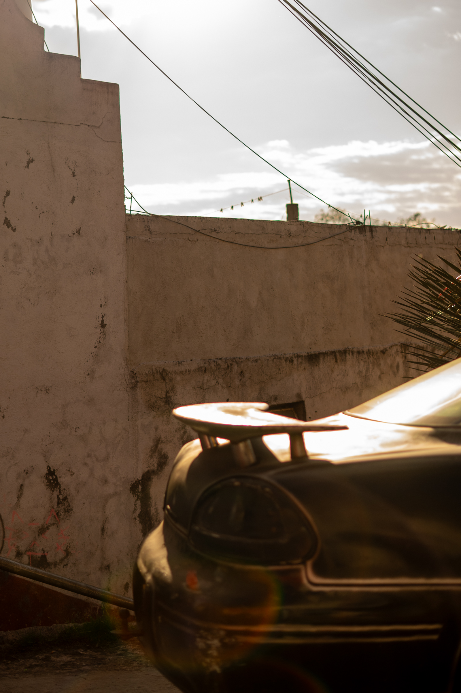
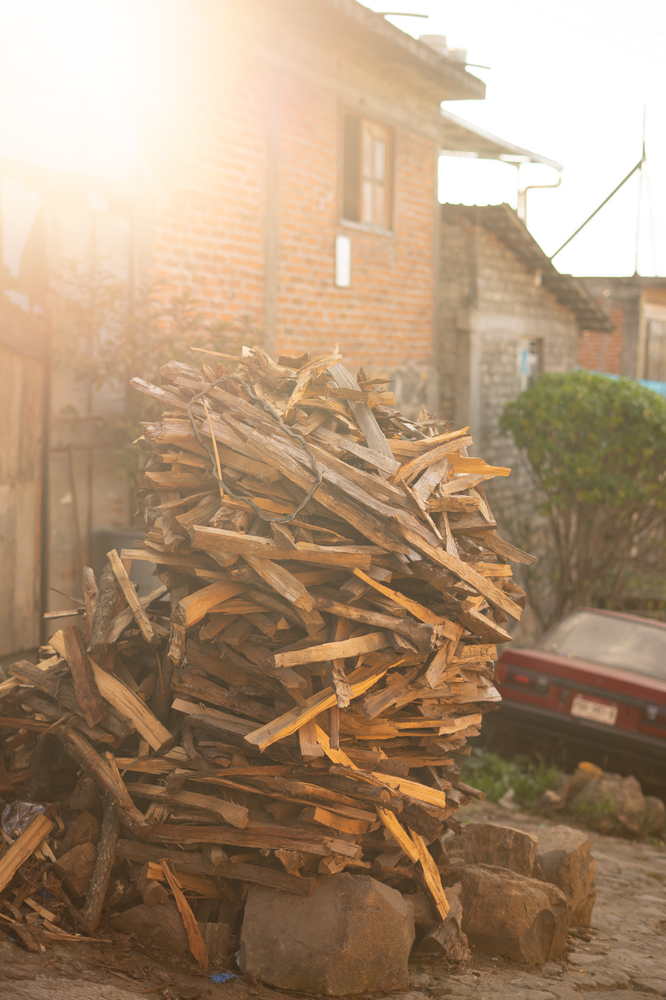

Monarchs, Michoacán
Every November, hundreds of millions of monarch butterflies arrive in the oyamel fir forests of central Mexico after a journey of over 4,000 kilometres. These photographs were made at the Reserva de la Biosfera Mariposa Monarca, 2024.



